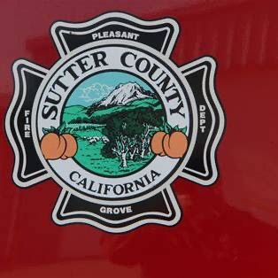
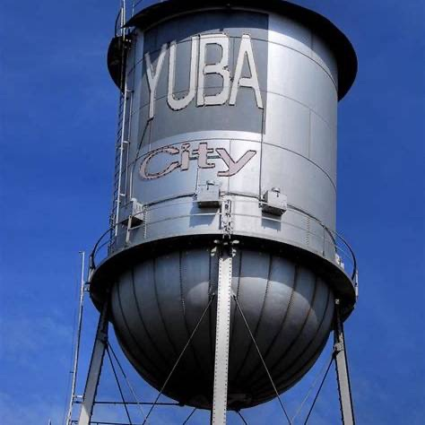
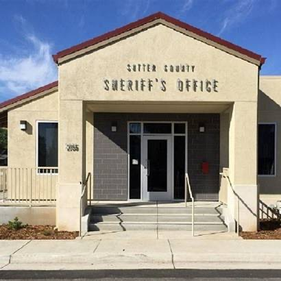

Protect Emergency Response
Help keep local fire stations open and maintain firefighters, paramedics and 911 emergency response when minutes matter.
Measure G is a locally controlled one-cent sales tax that helps protect fire and 911 emergency response, sheriff and police patrols, reliable drinking water, road repairs and other essential local services.
When a fire breaks out, a family calls 911, a deputy is needed, or a community needs safe, reliable water, being prepared matters. Measure G is about protecting the fundamentals Sutter County residents already depend on.
Help keep local fire stations open and maintain firefighters, paramedics and 911 emergency response when minutes matter.
Support sheriff and police patrols and the local public-safety resources needed to serve communities across Sutter County.
Help ensure adequate, reliable drinking-water supplies and protect the basic infrastructure local communities need.



It is about preventing the loss of services Sutter County residents already rely on. Rising costs, aging infrastructure and growing demands are putting real pressure on public safety and water systems.
Some days, only 3 deputies patrol roughly 600 square miles.
Fire or medical response in parts of the county can take up to 15 minutes.
Measure G was developed by Sutter County, Yuba City and Live Oak as a local funding source. The ballot measure calls for independent audits, citizens' oversight and public disclosure.
Measure G revenue is local funding that the State cannot take away.
Independent auditing provides a public check on how the funds are handled.
A Citizens' Oversight Committee is built into the accountability framework.
Residents can review how funds are spent and hold local government accountable.
Official measure information: Sutter County Elections.
Measure G is supported by the people who answer the calls, work the land, run the shops and raise their families here.
"Local money. Local control. Sutter taking care of Sutter."
The complete arguments, exactly as voters will read them — kept collapsed so the page stays simple.
When a fire breaks out, a family calls 911, or our community needs safe, reliable drinking water, there is no substitute for being prepared.
Measure G protects the basic local services Sutter County residents depend on every day:
This is not about expanding government. It is about preventing the loss of services we already rely on.
Rising costs, aging infrastructure and growing demands are putting increasing pressure on public safety and water systems. Without a stable local source of funding, the risk is simple:
Measure G provides a locally controlled source of funding for vital services. Every dollar stays local. Sacramento politicians can't touch it.
Measure G includes strong taxpayer protections:
We all will be able to see how funds are spent and hold local government accountable.
Taxpayer skepticism is reasonable. That is exactly why Measure G should be judged by what we stand to lose without it — and by whether the safeguards are strong enough to protect taxpayers.
Keeping firefighters, paramedics and law enforcement available when emergencies happen is not optional. Neither is ensuring reliable drinking water or maintaining the roads we all use.
Measure G is a local solution to local needs, with local accountability. Before service reductions and infrastructure problems become costly emergencies, we should protect the fundamentals.
Please join your neighbors, Fire Fighters, Deputy Sheriffs, small business owners, farmers, nurses, taxpayer advocates and us in voting YES on Measure G.
Protect the services that protect Sutter County.
The opposition raises fair questions about taxes—but its argument leaves out why Measure G is on the ballot: essential local services are already under strain.
Measure G was developed by Sutter County, Yuba City and Live Oak to create a locally controlled funding source for:
The State cannot take these funds. Independent audits, citizens' oversight, public review and spending disclosure are required so residents can see where the money goes.
Yes, Measure G is a general tax. But it does not mean the money disappears into a “blank check.” Local budgets are public, expenditures are audited, and voters can hold local officials accountable.
Measure G also is NOT a fixed annual charge.
What anyone pays depends entirely on taxable purchases. The opposition's own argument acknowledges that groceries and prescription medicines are exempt.
And Measure G does not have an automatic expiration date; the ballot language says the tax continues “until ended by voters.” Voters retain that authority.
Past elections do not solve today's problems.
Some days only three deputies patrol roughly 600 square miles, while fire or medical response in parts of the county can take up to 15 minutes.
Measure G asks whether Sutter County should have locally controlled resources to maintain essential services residents depend on before service reductions become more costly emergencies for local families.
Please join us in voting Yes on Measure G.
Public endorsements create visible community support. It takes thirty seconds, and your name joins neighbors from Yuba City, Live Oak and across the county.
Your endorsement has been recorded. Someone from the campaign will follow up about listing your name on the endorsement wall.
Setup note for the campaign: this form is not yet connected to a submission handler, so nothing was sent. Send us the destination address and we'll wire it up.
Campaigns run on yard signs, mail, digital ads and door-to-door conversations. Your contribution pays for talking to local voters before ballots are returned.
Suggested contribution
Donate to Yes on GOnline donations opening soon.Contributions by mail can be sent to the committee treasurer — mailing address to be posted here. Contributions to a California ballot measure committee are not tax-deductible.